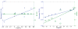

Recent Activity
Recent Activity
 [Export]
[Export]


|
Neuroimage. Author manuscript; available in PMC 2015 April 15. Published in final edited form as: Published online 2013 December 30. doi: 10.1016/j.neuroimage.2013.12.039 PMCID: PMC3951650 NIHMSID: NIHMS552872 Network diffusion accurately models the relationship between structural and functional brain connectivity networksaDepartment of Radiology, Weill Cornell Medical College, New York, NY, USA Farras Abdelnour: ude.llenroc.dem@6102aaf The publisher's final edited version of this article is available at Neuroimage See other articles in PMC that cite the published article. AbstractThe relationship between anatomic connectivity of large-scale brain networks and their functional connectivity is of immense importance and an area of active research. Previous attempts have required complex simulations which model the dynamics of each cortical region, and explore the coupling between regions as derived by anatomic connections. While much insight is gained from these non-linear simulations, they can be computationally taxing tools for predicting functional from anatomic connectivities. Little attention has been paid to linear models. Here we show that a properly designed linear model appears to be superior to previous non-linear approaches in capturing the brain’s long-range second order correlation structure that governs the relationship between anatomic and functional connectivities. We derive a linear network of brain dynamics based on graph diffusion, whereby the diffusing quantity undergoes a random walk on a graph. We test our model using subjects who underwent diffusion MRI and resting state fMRI. The network diffusion model applied to the structural networks largely predicts the correlation structures derived from their fMRI data, to a greater extent than other approaches. The utility of the proposed approach is that it can routinely be used to infer functional correlation from anatomic connectivity. And since it is linear, anatomic connectivity can also be inferred from functional data. The success of our model confirms the linearity of ensemble average signals in the brain, and implies that their long-range correlation structure may percolate within the brain via purely mechanistic processes enacted on its structural connectivity pathways. Keywords: networks, brain connectivity, functional connectivity, structural connectivity 1. IntroductionWhole brain connectivity networks or “connectomes” come in two flavors: structural networks extracted from tractography algorithms applied to diffusion MRI (dMRI) [32, 38]; and (resting-state) functional networks, inferred from the strength of long-range second order temporal correlation structure of activation signals in various brain regions [14]. Subsequent analysis using ICA [16] or graph clustering techniques [56], indicate the presence of distinct sub-networks, prominently the default mode and salience networks [33]. Diffusion tensor imaging (DTI) has been extensively used as an estimate of structural connectivity [12, 13, 64]. Probabilistic tractography methods for estimating structural connectivity from DTI have been adopted in the literature, e.g. [38, 39]. Both forms of connectivity have experienced great interest from the neuroscience community, as shown in [1, 8, 34, 36, 43]. A major goal of connectome research is to discover whether, and how, the structural and functional networks of the brain are related - an active area with tremendous interest and wide ramifications in neuroscience and computational biology [15, 21, 25, 30, 34, 36, 35, 46]. Previous investigations have relied on non-linear models of cortical activity which were extended to model whole-brain behavior via coupling between regions based on structural connectivity [36]. Other studies place non-linear oscillators at each cortical location and likewise couple them using anatomic connectivity strength [15, 21, 25, 30]. Since these powerful generative simulation models are only revealed through large scale, fine-grained finite difference stochastic simulations over thousands of time samples, they present a practical challenge for the task of inferring functional connectivity from anatomic. The field has not actively considered linear graph-theoretic dynamic models for this purpose, with a few exceptions described below. Although complex brain dynamics preclude completely linear responses, ensemble-averaged behavior of large connected but individually non-linear neural populations can be quite linear [59]. In this paper we (re)introduce a class of linear models capturing the correlation structure of whole brain dynamics at low frequency BOLD levels [29, 34, 35]. We argue that while local brain dynamics are not linear or stationary [8, 42, 37], the emergent behavior of long-range steady state 2nd order correlations should be insensitive to detailed local dynamics, and dependent only on the topology of structural networks. Thus, our hypothesis is that linear macroscopic models are sufficient to infer the long-range correlation structure of brain activity, without requiring detailed non-linear simulation models. Specifically, we present a simple, low-dimensional network diffusion model producing accurate description of the structure-function relationship. Network diffusion models random walks on a graph, covering phenomena from image noise removal [67] to Markov random fields [57]. Interestingly, network diffusion successfully captured the progression of misfolded proteins within brain networks, and recapitulated patterns of dementias like Alzheimer’s disease [53]. We hypothesize that resting-state functional relationships between brain regions can be captured by a similar diffusion process applied to the structural network. While the proposed model is linear, similar to [29], we impose constraints modeled after the interaction of the various cortical regions by taking the Laplacian of the connectivity matrix. We test the proposed model using dMRI and fMRI brain scans of healthy subjects, and demonstrate higher structure-function correspondence than other competing methods including neural mass models [23, 48, 11]. Our work could provide impetus for similar parsimonious approaches in modeling other complex biophysical phenomena. Our key idea is that functional signals at the spatial and temporal resolution of BOLD signals in brain regions are an ensemble average of millions of neurons, and are therefore governed mainly by the number of neurons firing at any time rather than by the complex behavior of individual neuronal activity. The non-linearities associated in neurons’ individual firing patterns are largely obliterated in the ensemble signal. Thus, the signal correlation between two large connected regions ought to be governed dominantly by linear processes. We show that the simplest linear and purely mechanistic process enacted on the network can reproduce the functional relationship between brain regions. Since functional relationships appear to be enacted on a physical substrate the brains structural connectivity our work implies that the former is a derivative property of brain structure rather than an independent property. 2. Theory2.1. Network notationIn a brain network each node represents a gray matter region located on either the neocortex or in deep brain subcortical areas. We define a network = ( , ) with a set of N nodes = {vi | i ∈ 1, …,N} and a set of edges given by an ordered node pair = {(i, j) | i ∈ , j ∈ } [2]. Between any two nodes i and j there is a fiber pathway whose connectivity weight ci,j ∈ [0,∞) can be measured from dMRI tractography. The structural connectivity matrix C = {ci,j |(i, j) ∈ } is obtained via anatomical connection probability (ACP), where the matrix elements are obtained as a function of weighted fiber densities between nodes [39]. Although some individual neurons are known to be directional, dMRI does not allow measurement of directionality. Major fiber bundles resolvable by dMRI, especially cortico-cortical pathways are generally bidirectional, having roughly equal number of connections in either direction [3]. We define the connectivity strength or the weighted degree of a node i in this graph as the sum of all connection weights: . 2.2. Linear network modelsA previous implementation of a linear model for achieving the structure-function correspondence by [36] is used in this paper as a comparison, following [29] where an i.i.d. Gaussian noise source ξ(n) drives a discretized multivariate autoregressive linear system given as: (1) Here vector u(n) is the activation signal at time point n of all network nodes corresponding to regions of the brain. The matrix A serves to relate the mixing between signals at different nodes, as per A = (1−α)I+C, where α is some leak parameter from the activity of each node, and C is the anatomic connectivity matrix described earlier. Since a single “mixing” parameter α cannot access many interesting regimes in the space of linear models, here we modify A via two parameters: By allowing two degrees of freedom instead of one, we obtain a broader range of linear models than the one proposed by Galán. In order for the simulation to be stable, the matrix A is normalized to have unit norm, or ||A|| = 1. Following [36], resting state functional connectivity was obtained via stochastic discrete-time simulation over a range of α ∈ [−3, 3] and β ∈ [0, 6] in steps of 0.1 for both parameters. At each point (α, β), the 1 error with respect to true functional connectivity was computed. We chose the (α, β) pair that gives the smallest error for final computation of functional connectivity. 2.3. Non-linear neural mass models (NMMs)NMMs model neural activity in localized populations (minicolumns) in terms of second order state-space differential equations, where the post-synaptic potential (PSP) of neuronal populations is the hidden state, and the activation signal, whether measured via EEG, MEG or BOLD, is the output variables. The model gives rise to systems of coupled second order non-linear differential equations, whose coupling coefficients are determined by the amount of connectivity between them, which is not known a priori. Since no closed-form solution exists for these equations, the model is a simulated generative model, whose behavior is accessed via large-scale simulations over thousands of time points, starting from stochastic endogenous and exogenous signals representing mean firing rates. An NMM defined in terms of voltages and conductances was utilized [11], and applied to networks ranging from 66 to 1000 nodes. In a more complex recent model, a set of coupled NMMs were instantiated at each node of a connected brain network, with inter-regional couplings determined by anatomic connectivity [36]. In the proposed model, inter-regional coupling is modulated by a single coupling parameter c, whose chosen value greatly affects the behavior of this highly non-linear coupled system. Here we implement this approach using original computer code used in [36]. Values of c were varied over a range c = {0.02, 0.07, 0.12, 0.17, 0.22, 0.27, 0.32} for each subject and the value yielding the highest match with empirical functional connectivity was chosen. 2.4. Proposed network diffusion modelWe now introduce from first principles a physically realistic linear dynamic network model of functional connectivity relying on its emergent linearity, and obtain a closed-form solution which obviates the need for generating simulated signals. Consider first an isolated cortical region R1. We assume that the average activation signal over all neurons in this region, denoted by x1(t), is proportional to the number of firing neurons per voxel (rather than to the actual action potentials thereof). Although the internal dynamics of this isolated neural population is complex and likely chaotic, in keeping with our emphasis on simple linear models, we allow the simplest possible dynamic behavior of a damped system, given by dx1(t)/dt = −βx1(t). This behavior is consistent with a highly damped system whose impulse response to transient signals dies away as an exponential decay, whose rate is controlled by the decay rate β. This behavior could arise by a number of mechanisms; for instance the refractory period after neural discharge which effectively acts as a damping function on the neural activation signal. Now we expand the model to cover an isolated pair of cortical regions R1 and R2 connected by a single fiber population, whose connectivity weight is given by c1,2. The number of firing neurons in R2 is V2x2, where V2 is the number of voxels in R2. Of these, the number of axonal projections from R2 to R1 is proportional to
(2) There is, of course, no reason why the rate constant β should be identical for both the internal and external signals contributing to the dynamics of R1, but in the interest of simplicity and in the absence of evidence to the contrary we have assumed identical rates. This then is the first order dynamics of an isolated pair of neuronal populations. For multiple afferents into R1, we modify this to (3) Since the regional parcellation in fMRI-based functional networks is somewhat arbitrary, the regional volumes Vi are not germane to the model, and must be replaced by graph quantities since our goal is a graph model for this dynamics. Clearly, the regional degree δi are closely related to the volumes Vi, and for cortical sheets, the relationship will be roughly linear. Unfortunately, limitations of connectivity and regional volume measurements, combined with the need to integrate both cortical and subcortical nuclei, precludes a straight-forward relationship. Thus, for the purpose of this paper we propose two simple alternatives: linear: Vi ∝ δi, and sub-linear:
After substituting regional volumes by their respective degree and concatenating over i, Eq. 3 easily expands to the entire network with arbitrary topology: (4) where the matrix L is the well-known network Laplacian, whose exact form will depend on which of the above two definitions of regional volume is used. For the former definition, we obtain = I − Δ−1C, where Δ is the diagonal matrix with δi = Σjci,j as the ith diagonal element. For the latter definition, we have (5) In the remainder of this paper we use the second definition because it is preferable when including subcortical regions, and empirically gives networks with a closer match to resting state data. On numerical grounds too it is preferable, since it is symmetric and nonnegative definite, as described in previous graph studies [2]. The corresponding eigenvalues are all between 0 and 2. The network diffusion equation 4 has an explicit solution
which defines the evolution of the initial configuration x0 under subsequent graph diffusion process on . 2.5. A closed form solution of the graph diffusion model for functional brain networksAt time t the effect of an initial configuration, with only region i active, is given by x(t) = exp(−β t)ei, where ei is the cardinal unit vector in the ith direction. Collecting the configurations due to all regions we obtain We hypothesize that the configuration at time t of an initial configuration involving only region i is simply the functional connectivity of i with all other regions. Therefore we obtain Here the functional connectivity matrix is shown as a function of network diffusion time. Note that due to the eigen-decomposition of described above, we have (0) = I, and (∞) = 0. That is, regardless of the underlying structural network (as long as it is not disconnected), if no time is allowed for diffusion, there are simply no connections between brain regions; and in the steady state, all regions are connected to all other regions equally. Between these two extremes, a spectrum of functional networks exist. We hypothesize that the network diffusion time necessary to match the observed functional network will depend on the signal being interrogated (whether BOLD, EEG or MEG) and various details regarding action potentials and their speed of propagation through various neuronal populations. Rather than minutely modeling these parameters, we simply hypothesize that at a critical time constant tcrit, to be determined experimentally, the network (tcrit) will match the observed functional network, or we have (6) Since the eigen decomposition = U∧Ut is dominated by a few very small eigenvalues, the hypothesized functional networks should also be similarly dominated by these eigenmodes. At small diffusion time, only the first eigenmode will be present, giving
where λ1 and u1 are known from = U∧Ut. 2.6. Model inversion: inferring structural from functional connectivityAn intriguing possibility raised by our proposal is that due to linearity it may be inverted, i.e. to partially (due to the presence of noisy eigenvectors) obtain structural connectivity C from functional connectivity matrix , as follows
(7) where it is understood that log( ) is the principal logarithm of the matrix , and where structural connectivity matrix C is obtained from
(8) or
(9) whichever is appropriate. The inversion is specified only up to the normalized Laplacian, and going from there to connectivity matrix would require knowledge of node degree. However, this can be obtained a priori, either from the given functional matrix or prior structural matrices. Although a detailed investigation of this application will warrant a separate study, here we provide a sketch of preliminary results and show two estimated structural connectivity matrices obtained from the functional connectivity. First the functional connectivity matrix is regularized by factoring it into its SVD components, or We next apply a threshold to the singular values λk, keeping the values above the threshold, obtaining
where
3. Methods3.1. Subjects and MR imagingT1-weighted structural MR and High Angular Resolution Diffusion Imaging (HARDI) data were collected on 8 healthy adults on a 3 Tesla GE Signa EXCITE scanner (GE Healthcare, Waukesha, WI, USA). HARDI data were acquired using 55 isotropically distributed diffusion-encoding directions at b = 1000 s/mm2 and one at b = 0 s/mm2, acquired at 72 1.8 – mm thick interleaved slices with no gap between slices and 128 × 128 matrix size that was zero-filled during reconstruction to 256×256 with a field of view (FOV) of 230 mm. The structural scan was an axial 3D inversion recovery fast spoiled gradient recalled echo (FSPGR) T1 weighted protocol (TE = 1.5 ms, TR = 6.3 ms, TI = 400ms, flip angle of 15) with 230 mm FOV and 156 1.0 – mm contiguous partitions at a 256 × 256 matrix. Resting state fMRI was performed, together with anatomical MRI, with an eight-channel head coil using echo-planar imaging based functional MRI pulse sequences (repetition time TR = 2 s, echo time TE = 30 ms, flip angle 70, matrix size 64 × 64 × 28, axial field of view 24 cm, 5 mm slice thickness; rs-fMRI was acquired with 180 samples. 10 samples at the beginning were discarded. Before rs-fMRI, the subject was instructed to think of nothing in particular. The subjects’ ages range from 23 to 60, with three females and five males. Subjects were scanned under normal subject protocol approved by the institutional review board (IRB). 3.2. Extraction of structural and functional brain networksDiffusion tractography processing closely followed established pipelines [40, 53]. Briefly, structural and diffusion MR volumes were co-registered using SPM tools in MATLAB [4, 28], then parcellated into 90 cerebral cortical structures as per [60]. Parcellated regions were used to seed probabilistic tractography in co-registered diffusion MRI volumes. Connectivity weight between any two regions was given by a weighted sum of tracts going between them, as per [38]. Simple statistical thresholding was performed to remove spurious weak connections, defined as those below the p = 0.001 level of significance. The SPM-based package DPARSF [58] was used to perform the standard resting-state preprocessing steps. For all subjects the first 10 out of 180 time points each were discarded. Spatial resolution was set at 2×2×2mm3. The images were realigned, then normalized using DARTEL [7]. The images were next smoothened with Gaussian smoothing kernel with full width half max FWHM = [4 4 4]mm. This was followed by detrending the images over the range 0.01–0.08Hz. Finally, the noise covariates were regressed out. The functional connectivity networks and resulting matrices were obtained from resting state fMRI scans using the CONN functional connectivity toolbox [66]. Weak functional connectivity, defined as smaller than
Both the linear and non-linear generative models were evaluated by comparing the similarity between the functional connectivity predicted by the model and the empirical functional connectivity measured from resting state fMRI data. The measure of similarity we chose is the simple Pearson correlation coefficient, evaluated only over thresholded node-pairs, in a manner similar to [36]. This avoids the noise introduced by the spurious connectivity between weakly connected or non-connected regions. 4. Results4.1. Performance of model depends on global connectivity coupling parameterFig. 1 (left) depicts the Pearson correlation between true FC and the nonlinear model prediction for all subjects over the values of c in the nonlinear model. The resulting curve takes on a bell shape. A strikingly similar behavior is seen in the linear network diffusion model (Fig. 1, right), whose agreement with true FC also varies with the global “connectivity coupling” parameter βt, follows a bell shape, similar to the non-linear model. In Discussion we explain how this behavior is observed in almost all computational models of brain dynamics, including coupled oscillator models [22]. 4.2. Correlation of rsFC with FC predicted by each modelWe compare the performance of the linear Galán and non-linear Honey et al. [36] models with the proposed functional connectivity estimates by evaluating the Pearson coefficient of the correlation between each model prediction and the true functional connectivity matrix rsFC. Fig 2 reflects the scatter plot of each of the mean functional connectivity estimates over all eight subjects relative to the empirical matrix. The figure suggests that in the case of the linear model estimate of functional connectivity the estimate is poor, while the alternate methods nonlinear and Laplacian models offer a tighter scattering of the estimates relative to the true functional connectivity. For the nonlinear model, the estimated FC is evaluated at the value of the parameter c yielding the highest correlation with true FC. Table 1 summarizes the performance of each approach over all eight subjects. Clearly, FC predicted by the network diffusion model is more closely correlated to the true FC matrix than possible with the other models. In order to statistically validate this, we performed Fisher’s R to z transformation, and obtained its p-value. The Fishers R to z transformation is a tool that measures whether two given values of Pearsons R are statistically different or not (quite apart from whether each R is by itself significant). Here we used it to report the significance of the difference in R between two correlations: empirical FC versus FC predicted by the nonlinear model, and empirical FC versus FC predicted by the network-diffusion model. The reported Fisher statistic is therefore a measure of the incremental value of the network diffusion model over the non-linear model. This allows us to test the statistical significance of the correlation between estimated FC and the empirical FC. These are tabulated in Table 1. All improvements are highly significant statistically compared with the non-linear model. From the table it can be seen that in general the non-linear model provides higher correlations with measured data than the Galán linear model, but lower than the network diffusion model. Fig. 3 depicts group means of structural and functional networks, both empirical and model predictors. Galán linear model appears to miss the frontal lobe connectivity. Scatter plots. Clockwise from top left: structure connectivity, linear functional model, network diffusion functional model, and non-linear functional model. Blue: frontal, cyan: parietal, green: occipital, orange: temporal, red: subcortical. Models comparison Inter-hemispheric connections are clearly underestimated by all models considered, which we attribute to the well known distance bias in tractography [36]. When inter-hemispheres are omitted (Fig. 3, ‘Intrahemi FC’), the estimated networks begin to match empirical data quite well. The network diffusion model has a global a priori unknown parameter βt. The above results correspond to maxima over a range of βt (Fig. 1, right). Here we show that we can replace the per-subject optimal parameter with a global “learned” parameter given by the median of βtcrit over eight subjects, since the maximum correlation occurs approximately at the same point for all cases (Fig. 1, right). Table 2 contains those results. The loss of performance is minimal, as suggested by the high (hence non-significant) p-values associated with Fisher’s R to z transformation listed in the same table. This emphasizes the value of the proposed model for predictive purposes, with parameter value learned from group analysis. Correlations with global value βtcrit = 2 To verify that the estimated functional connectivities were not obtained by chance, the mean structural matrix as well as the means of the estimated functional matrices from the three methods were each randomly scrambled. The Pearson correlation of each scrambled matrix with the true functional connectivity shown in Fig. 4 indicates that our correlation results are extremely unlikely to be due to chance. Histograms resulting from randomizing structural and estimated functional networks. The resulting Pearson correlations for the randomized matrices are negligible while those obtained from the estimated network matrices are significant. In order to further characterize the performance and robustness of each model, they were recomputed for progressively sparse (pruned) mean structural connectivity, and their correlation with measured functional network was determined at each sparsity level (Fig. 5). The graph diffusion network shows a consistent Pearson correlation up to a thresholding level of about 0.3 of the maximum edge weight while remaining superior to the linear and non-linear models. This result also demonstrates the superior stability of the proposed approach with respect to connectivity measures. 4.3. Summary network measuresNext we demonstrate that the proposed model recapitulates the main summary network statistics of functional brain networks. For this experiment the same level of sparsity (15%) was maintained in all predicted networks obtained from the pruned structural network whose sparsity was 10%. Using the Matlab toolbox Brain Connectivity Toolbox [54], and following [54], the diagonal and negative elements of the matrices are excluded. We note that the negative elements of the mean connectivity matrices discussed in this work have a small mean when compared with the positive elements. Additionally, the statistics are computed only for the largest 15% elements of each matrix, since this is where Pearson correlation achieves a maximum (Fig. 5, black vertical line). Very few negative elements survive, if any. The metrics used were mean path length, global efficiency, maximized modularity, and optimal community structure. For all networks the statistics were obtained at the same level of sparsity. For mean path length and efficiency, the distance between nodes was modeled as a Gaussian with respect to connectivity strength. The non-existing edges were assigned a distance of infinity. As shown in Fig 6, the summary metrics from the proposed model closely resemble those from the measured functional network, to a somewhat higher extent than other models considered. The results provide additional means of validating the graph diffusion model; and while the mapping from a network to these summary metrics is not one to one, these results demonstrate that the model gives networks with the same kind of statistical behavior as expected from real functional networks. 4.4. Seed-based connectivity analysisWe now investigate seed-based connectivity of some specific regions with interesting functional roles (Figs 7–9). Fig 7 shows functional connectivity out of the right posterior cingulate and suggests a strong connectivity with the frontal lobe and the precuneus, regions with known strong resting state functional connectivity to the posterior cingulate cortex [62, 63]. Eight subjects’ mean color maps resulting from a seed placed at right posterior cingulum. Clockwise from top left: empirical functional, linear modeled functional, the proposed network diffusion functional connectivities, and non-linear (Honey ...  Left: Estimate of the right superior motor area and right rectus connectivity from structure compared with fMRI-obtained connectivity over all eight subjects. The two regions are only functionally connected. The proposed model closely estimates the functional ... Fig. 8 shows the functional connectivity out of the right frontal superior gyrus. We observe correlation with the right precentral, the right middle frontal, and the middle temporal lobe. Mantini et al. report correlation between superior frontal sulcus and ventral precentral as well as middle frontal sulcus [45]. We now show that the proposed model matches true FC for region pairs with and without known SC. We give examples of the proposed model’s estimation of function from structure by considering two functional nodes with non-existing structural connectivity, and two nodes with both functional and structural connectivities. In the first case we consider the nodes of right superior motor area and the right rectus over all eight subjects. The goal is to highlight the model’s ability to estimate function in absence of structural connectivity edge. The resulting connectivity coefficients are given in Fig. 9 left. Since the two regions are only functionally connected, the structure vs. function plot is all zeros. On the same figure, the estimated FC remains close to the empirically obtained FC for all eight subjects. The model was able to capture the functional connectivity even in absence of corresponding structural connectivity. In the second case we consider two regions that are both structurally as well as functionally connected. Fig. 9 right shows the connectivity of the superior medial and the right rectus. The red plot gives the correlation of SC and the empirical FC over all eight subjects. With the exception of subjects 5 and 6, the estimated functional connectivity is nearly consistent with the empirical FC. 4.5. Model inversion: examplesWe evaluate the estimated structural connectivity matrix for α = 0.1 (where α is as defined in Section 2.6) and α = 0.3 given the mean functional and structural connectivity matrices. The smaller value of α leads to a Pearson correlation with the actual structural connectivity of 0.4901 (Fig. 10c), while for α = 0.3 the corresponding Pearson correlation is 0.4199 (Fig. 10d). For reference, Fig. 10a shows the mean functional connectivity of all eight subjects, while Fig. 10b depicts the corresponding structural connectivity of the eight subjects. The matrices’ elements have been arranged in such a way that they are ordered by lobes (frontal, parietal, temporal, occipital, cingulate, and subcortical) and the various regions are listed on the figures. Additionally, The nodes are arranged such that the left and right hemispheres’ nodes alternate in an odd-even fashion. Estimating structural connectivity from empirical functional connectivity (Fig 10(a)). Empirical structural connectivity is depicted in 10(b). Figures 10(c) and 10(d) show the estimated structural connectivity at SVD thresholds of 0.1 and 0.3, respectively. ... Although these results are preliminary, they conclusively show that plausible structural connectivities can be inferred from functional connectivity using the inverse inference approach proposed here. Clearly, there is room for improvement in this process, and we are currently investigating sparsity-inducing inversion algorithms to overcome the ill-conditioning and non-uniqueness of the network diffusion operator which will be reported in a future paper. 5. Discussion5.1. Summary and significanceWe have shown that the correlation structure of BOLD functional brain networks is well represented by a simple network diffusion process on the underlying structural brain network. Such a linear graph model admits a closed form deterministic and testable solution of macroscopic interactions of brain activity without requiring any details of neural coding or their biophysical substrates. The presented correlation numbers (Table 1) demonstrate improved performance over existing linear and non-linear models. However, the gap disappears after group averaging of networks, as shown by the nonsignificant p-value of Fisher’s transform in the last row of the table. This indicates that while non-linear models are good for canonical brain networks, they may be equally or less accurate for individual subjects than the presented linear model. We demonstrated preliminary evidence for invertibility of our model, which can enable reverse inference from functional to structural connectivity - an intriguing possibility with new potential applications. Philosophically, our work could motivate the field to look for simple models in explaining brain-related phenomena. Although validation was performed using a limited number of subjects, our results are unlikely to be statistical artifacts because no learning of model parameters is necessary - there is only one global diffusivity parameter, whose values are readily estimated from each dataset directly, and which was found to be highly consistent between subjects. Hence one of the most attractive features of our model is its low dimensionality, which compares favorably with many existing non-linear generative models that can have tens of unknown parameters whose specific values can greatly influence behavior. For instance, in oscillator models completely different quasi-stable states can be realized by different samples of parameter space. We do not claim that linear modeling will address detailed questions regarding the nature and cause of oscillations in the brain - this is still best explored via previously described large, non-linear simulation models. However, our linear model is perfectly adequate for the limited purpose of deriving the correlation structure of low frequency BOLD data, and hence for estimating the long-range functional connectivity of the brain. It provides a simple closed form relating structural and functional networks - a tremendously useful practical feature which could, in the future, obviate the need to obtain resting-state functional networks or allow the merging of structural and functional networks. 5.2. Relationship to other linear and statistical graph approachesThe proposed network diffusion model is not a unique theoretical result since it arises naturally from the graph Laplacian, a rather well-studied entity in graph theory [18]. Thus, various flavors of known graph metrics are intimately related to our model, including communicability [27], synchronizability [17], commute distance in random walks [10], and effective resistance in resistive networks [26], to give only a few examples. Equations 4 and 5 define the classic network heat diffusion equation, which has been extensively investigated in many network problems, and is the graph-analog of the classical heat equation whose solution is given by the Laplace-Beltrami operator [67]. It is known that for random graphs embedded in Euclidean space, the graph Laplacian approaches the Laplace-Beltrami operator as the density of graph nodes approaches infinity [67]. Zhang and Hancock [67] have used the Laplacian matrix exponentiation for graph-based image smoothing. A network communicability measure on unweighted graphs was proposed [27] recently. Indeed, the exponentiation of adjacency or Laplacian matrix is quite a common tool in graph theory, and has found multiple applications in various contexts [2, 57, 67]. However, to our knowledge, the use of graph diffusion for modeling brain-specific phenomena is unique to our work, with the exception of our previous publication on network diffusion models of neurodegeneration [53]. We do not consider here prior linear modeling of isolated cortical regions [48, 49], instead focusing on large connected networks for which the best known linear model was implemented by [36] following Galán [29], both being examples of multivariate autoregressive (MAR) models [61]. However, general MAR models involve hundreds of unknown parameters whose estimation without prior knowledge is practically unfeasible for the current task [61]. In some respects, our method could be thought of as a MAR model with prior information supplied in the form of anatomic connectivity. In a certain sense, all linear models involving the same graph, including the proposed and Galán models, are going to share many common features, including the eigenspectrum and steady state behavior given by the dominant eigenvector. However, in the context of the structure-function relationship, which linear model one chooses matters, and steady state characterization is insufficient: we need a model whose dynamics change with time, and at some time scale reproduce the correct functional structure. Although previous authors have concluded that linear models are not as good as non-linear ones, our results show that the problem is not with linear models per se but which linear model is being used. The utility of linear graph models is revealed after careful first-principles modeling. Plausible neuroscientific constraints we have introduced appear necessary to access the appropriate regime in the space of all linear graph models. Other differences between the Galán and proposed models may be enumerated. Although the former obviously admits a closed-form solution, this has not historically been explored for long-range brain networks. Our model explicitly employs the Laplacian, whereas the Galán model uses the adjacency matrix. The two models become directly comparable only for uniform node degree, which is unrealistic for the brain. The Galán model must be explicitly normalized in order to guarantee stability, whereas the diffusion model is always stable. Model-free approaches should also be mentioned in the context of structure-function relationship. Purely statistical tools like Pearson correlation are good examples, as is more recent work on partial correlation or partial least squares. Partial correlation has been suggested as a way of disambiguating direct versus indirect functional connections between brain regions. A detailed study of the ability of various types of correlation and other statistical measures to reproduce known anatomic connections in the visual cortex was conducted in [20]. Partial correlation is a good candidate for inferring structure from function. How these methods perform in comparison to the purely deterministic approach using graph eigen-analysis suggested in this paper is an interesting question which will be investigated in the future. However, we believe a model-based approach has a better chance of constraining this inherently ill-posed problem compared to purely statistical methods. 5.3. Relationship to non-linear neural mass, field and oscillator modelsThe classic NMM did not consider large networked regions, but subsequent extension to small networks connecting 3–4 distinct functional domains like memory, execution, vision, etc., called Dynamic Causal Models (DCMs), were proposed. NMMs were extended to spatially distributed neural fields using mean field steady state approximations, yielding a traveling wave involving spatiotemporal convolution with spatially invariant connectivity kernels modeled Green function [6, 19, 24, 50] - a kind of spatial Laplacian analogous to our network Laplacian. Traditional field models, however, have generally employed spatially invariant connectivity kernels, which are difficult to apply to long-range, inhomogeneous cortico-cortical connections. An example where this was successful is in modeling thalamo-cortical connectivity [41, 52], but we are aware of no report on whole brain resting state networks. Neural mass models are much more successfully applied to the current task, whereby NMMs are deployed at the nodes of long-range networks, whose dynamics are then coupled via anatomic connectivity [36, 51]. Our coupled NMM implementation based on [36] matched our low-frequency BOLD correlations better than previous reports [36]. These coupled NMMs behave chaotically or stably, depending on coupling strength and propagation delays between regions. For the practical task of inferring the correlation of the structure-function relationship, however, they present some limitations vis-á-vis the proposed approach. First, these generative models require large simulation runs, making them impractical for the purpose of routine analysis. Second, while both the actuators (chaotic oscillators) and output metric (phase synchronization) in these simulations have a long tradition [65], their abstract nature makes them difficult to apply and interpret in practical connectome analysis. Although this elegant theory is now finding its way to practical applications [22], its agreement with actual measurements remains difficult to assess. The empirical data in [22] do not stand out compared to [36] or the current results, although this could change with new analyses. Another limitation is the need to fit a large number of model parameters, an area where a linear model with a single global parameter has distinct advantages. Finally, much of the oscillator modeling has been performed using simulated [44] or macaque [21, 31] networks; hence further applications in human health and disease will be keenly awaited. Our correlation numbers are consistently lower than those in [36]. Group averaged structural and functional connectivity was used in [36], whereas we used individual subjects SC and FC, which are typically more variable and challenging than group averages. Our SC networks show lesser degree of inter-hemispheric connectivity than [36], partly due to the limitations of tractography algorithms this could lower the SC-FC relationship. There are other methodological differences which might account for the discrepancy, for instance their use of 998 regions compared to 90 in our case. Although their results after reducing the data to 66 regions shows a very high correlation (R = 0.70) compared to ours, this could simply be a result of averaging, an impression reinforced by the fact that the authors’ original 998-region correlation (R = 0.46) is much weaker. Finally, we do not perform the somewhat controversial statistical rescaling of SC edge weights to fit a Gaussian distribution, as reported in [36]. 5.4. Why does graph diffusion work at all - Emergent linearity in brain dynamicsIt may be puzzling that a linear model with no neuroscientific detail apart from a macroscopic view of population dynamics is able to equal or outperform richly detailed non-linear dynamic models described above. In motivating our work we recruit two commonalities gleaned from them: a) practically any method of coupling local dynamics via realistic anatomic connectivity is able to sustain the kinds of steady-state spatiotemporal dynamic behavior observed in the brain; and b) the network effect given by anatomic connectivity appears to dominate over local dynamics of the brain, especially at low (BOLD) frequencies. Thus steady state correlation patterns at BOLD frequencies should be insensitive to higher order non-linearities like multistable transient states driven by stochastic noise. This impression is reinforced by comparing Fig. 1, which shows how long-range correlations change with the global connectivity coupling parameter βt, with a similar figure from the coupled oscillator paper [22] and indeed with computational models of various vintages and frequency ranges [15, 31, 44]. Most of these models exhibit the characteristic bell-shaped behavior with respect to the global coupling parameter. A consistent finding of these investigations is a “quiescent” ground state characterized by low frequency correlations - we speculate that it is this regime that allows our linear model to recapitulate second-order functional correlations from quasi-chaotic signals. This does not imply that the previous non-linear oscillator models are approximately linear (they are not, since they display multi-stable quasi-chaotic behavior), but that the gross behavior of networked sites has a surprisingly consistent pattern over a range of models. Ultimately, the best argument for our model is perhaps simply that it seems to work. The literature on complex systems suggests that just as simple local interactions can give rise to highly complex global effects; conversely, simple macroscopic behavior can emerge from complex local processes. The emergent behavior of large scale complex systems can be surprisingly linear within large phase domains bounded by (non-linear) phase transitions. Indeed, the emergence of predictable and regular behavior from chaotic ensembles is considered a hallmark of complexity [55]. For example, the admittance of large electrical networks of capacitative and resistive elements is known to be chaotic, yet its frequency response is essentially linear in large frequency ranges [5]. This kind of predictable, regular emergent behavior is seen in complex systems as varied as the flocking of geese [47] and complex biological signaling networks [9]. Our results similarly suggest that the macroscopic consequence of the interaction of complex but coupled neuronal processes in the brain are surprisingly amenable to coarse mechanistic modeling. 5.5. Limitations and future workThe second order correlation of the linear Galán model is computable in closed form via the network’s eigen decomposition; however here it was investigated via stochastic simulations in keeping with prior work to ensure effective comparison with earlier results. Network extraction requires a lengthy, involved process [38] whose deficiencies are inherited by our results. Our choice of the AAL atlas was motivated by its proven anatomic specificity and widespread use in related network analysis work. With only 90 nodes, our network might be considered “lumpy”; yet it is unclear if a finer scale network with more nodes will yield improvements. While a coarse atlas precludes finer scales of functional patterning, it improves the reliability of network connectivity. Variations in size and shape of cortical regions was not accounted for in our model. We did not consider regionally varying model parameters. We note that the results reported in this work are limited by distance bias. Distance bias is inherent to tractography from which the structural connectivity matrix is obtained, and is a constrain of current technology. Another potential issue is the thresholding operation we used to remove connections considered to be zero. Figure 5 suggests that the proposed model is not very sensitive to edge thresholding - a strength of the linear approach. We further employed a statistical significance threshold based on variance over all subjects, but due to their small number a bootstrap resampling technique might be more effective, and will be considered in future work. Our model does not possess oscillatory behavior, which would require accurate knowledge of path delays - in systems terms the Laplace transform has a real-valued pole - because the rich frequency content of neural populations is difficult to access and interpret from low-frequency BOLD signals. Our results support the view that frequency characterization is not necessary in capturing the whole brain correlation structure of BOLD activation. However, a fuller characterization would require path delays, which we will pursue in future work. This would be especially critical for modeling richer frequency signals, for example from magnetoencephalograhy (MEG). MEG can facilitate an investigation of the frequency response of the diffusion model and its eigenmodes - an aspect we are unable to explore due to BOLD’s poor temporal resolution. Finally, we are cognizant of inherent limitations of linear approximations of complex dynamic phenomena, and the risks associated with overinterpretation. We emphasize that this work is only aimed at capturing the stationary correlation structure of functional activation, i.e. its functional connectivity, and it has no ability to generate actual time series of functional activity. The precise time series is neither germane nor accessible by any other method either, since an infinite number of time-series can have the same functional connectivity. A more serious limitation of our model is that it currently does not provide frequency information of the kind a generative simulation model can deliver. However, this is not a fundamental feature of linear modeling, and in future work we will develop frequency-resolved network diffusion models. Low frequency BOLD data are not adequate for that purpose, and this effort will necessitate EEG and MEG acquisitions.
Highlights
AcknowledgmentsAuthors would like to thank Olaf Sporns for supplying computer scripts that allowed the simulation of the non-linear model. AR and FA were supported by NIH grant R01 NS075425. HUV is supported by NSF grant 0956306. FootnotesPublisher's Disclaimer: This is a PDF file of an unedited manuscript that has been accepted for publication. As a service to our customers we are providing this early version of the manuscript. The manuscript will undergo copyediting, typesetting, and review of the resulting proof before it is published in its final citable form. Please note that during the production process errors may be discovered which could affect the content, and all legal disclaimers that apply to the journal pertain. References1. Achard S, Ed B. Efficiency and cost of economical brain functional networks. PLoS Comput Biol. 2007;3:e17. [PubMed] 2. Agaskar A, Lu YM. An uncertainty principle for functions defined on graphs. Vol. 8138. SPIE; 2011. p. 81380T. 3. Albright TD. Direction and orientation selectivity of neurons in visual area MT of the macaque. Journal of Neurophysiology. 1984;52:1106–1130. [PubMed] 4. Alemán-Gómez Y, Melie-García L, Valdés-Hernandez P. BASPM: Toolbox for automatic parcellation of brain structures. Human Brain Mapping 2006 5. Almond D, Budd C, McCullen N. Emergent behaviour in large electrical networks. In: Georgoulis EH, Iske A, Levesley J, editors. Approximation Algorithms for Complex Systems, Vol. 3 of Springer Proceedings in Mathematics. Springer; Berlin Heidelberg: 2011. pp. 3–26. 6. Amari S. Dynamics of pattern formation in lateral-inhibition type neural fields. Biological Cybernetics. 1977;27:77–87. [PubMed] 7. Ashburner J. A fast diffeomorphic image registration algorithm. NeuroImage. 2007;38:95–113. [PubMed] 8. Bassett DS, Greenfield DL, Meyer-Lindenberg A, Weinberger DR, Moore SW, Bullmore ET. Efficient physical embedding of topologically complex information processing networks in brains and computer circuits. PLoS Comput Biol. 2010;6:e1000748. [PMC free article] [PubMed] 9. Bhalla US. Understanding complex signaling networks through models and metaphors. Progress in Biophysics and Molecular Biology 2003 [PubMed] 10. Boley D, Ranjan G, Zhang ZL. Commute times for a directed graph using an asymmetric laplacian. Linear Algebra and its Applications. 2011;435:224–242. 11. Breakspear M, Terry J, Friston K. Modulation of excitatory synaptic coupling facilitates synchronization and complex dynamics in a biophysical model of neuronal dynamics. Neurocomputing. 2003;52–54:151–158. [PubMed] 12. Bullmore E, Sporns O. Complex brain networks: graph theoretical analysis of structural and functional systems. Nature Reviews Neuroscience. 2009;10:186–198. [PubMed] 13. Bullmore ET, Bassett DS. Brain graphs: Graphical models of the human brain connectome. Annual Review of Clinical Psychology. 2011;7:113–140. [PubMed] 14. Cabeza R, Kingstone A. Handbook of functional neuroimaging of cognition. 2 MIT Press; 2006. 15. Cabral J, Hugues E, Sporns O, Deco G. Role of local network oscillations in resting-state functional connectivity. NeuroImage. 2011;57:130–139. [PubMed] 16. Calhoun VD, Liu J, Adal T. A review of group ICA for fMRI data and ICA for joint inference of imaging, genetic, and ERP data. NeuroImage. 2009;45:S163–S172. [PMC free article] [PubMed] 17. Chen G, Duan Z. Network synchronizability analysis: A graph-theoretic approach. Chaos: An Interdisciplinary Journal of Nonlinear Science. 2008;18:037102. [PubMed] 18. Chung FRK. Number 92 in Regional Conference Series in Mathematics. AMS; 1997. Spectral Graph Theory. 19. Daunizeau J, Kiebel SJ, Friston KJ. Dynamic causal modelling of distributed electromagnetic responses. NeuroImage. 2009;47:590–601. [PMC free article] [PubMed] 20. Dawson DA, Cha K, Lewis LB, Mendola JD, Shmuel A. Evaluation and calibration of functional network modeling methods based on known anatomical connections. NeuroImage. 2013;67:331–343. [PubMed] 21. Deco G, Jirsa V, McIntosh A, Sporns O, Kötter R. Key role of coupling, delay, and noise in resting brain fluctuations. Proceedings of the National Academy of Sciences 2009 [PMC free article] [PubMed] 22. Deco G, Jirsa VK. Ongoing cortical activity at rest: Criticality, multistability, and ghost attractors. The Journal of Neuroscience. 2012;32:3366–3375. [PubMed] 23. Deco G, Jirsa VK, Robinson PA, Breakspear M, Friston K. The dynamic brain: From spiking neurons to neural masses and cortical fields. PLoS Comput Biol. 2008a;4:e1000092. [PMC free article] [PubMed] 24. Deco G, Jirsa VK, Robinson PA, Breakspear M, Friston K. The dynamic brain: From spiking neurons to neural masses and cortical fields. PLoS Comput Biol. 2008b;4:e1000092. [PMC free article] [PubMed] 25. Deco G, Senden M, Jirsa V. How anatomy shapes dynamics: A semi-analytical study of the brain at rest by a simple spin model. Frontiers in Computational Neuroscience. 2012:6. [PMC free article] [PubMed] 26. Ellens W, Spieksma F, van Mieghem P, Jamakovic A, Kooij R. Effective graph resistance. Linear Algebra and its Applications. 2011;435:2491–2506. 27. Estrada E, Hatano N. Communicability in complex networks. Phys Rev E. 2008;77:036111. [PubMed] 28. Friston K, Holmes A, Worsley K, Poline JP, Frith CD, Frackowiak RSJ. Statistical parametric maps in functional imaging: A general linear approach. Hum Brain Mapp. 1994;2:189–210. 29. Galán RF. On how network architecture determines the dominant patterns of spontaneous neural activity. PLoS ONE. 2008;3:e2148. [PMC free article] [PubMed] 30. Ghosh A, Rho Y, McIntosh A, Kötter R, Jisra V. Cortical network dynamics with time delays reveals functional connectivity in the resting brain. Cogn Neurodyn. 2008a;2:115–120. [PMC free article] [PubMed] 31. Ghosh A, Rho Y, McIntosh AR, Kötter R, Jirsa VK. Noise during rest enables the exploration of the brain’s dynamic repertoire. PLoS Comput Biol. 2008b;4:e1000196. [PMC free article] [PubMed] 32. Gong G, He Y, Concha L, Lebel C, Gross D. Mapping anatomical connectivity patterns of human cerebral cortex using in vivo diffusion tensor imaging tractography. Cereb Cortex. 2009;19:524–536. [PMC free article] [PubMed] 33. Greicius MD, Supekar K, Menon V, Dougherty RF. Resting-state functional connectivity reflects structural connectivity in the default mode network. Cerebral Cortex. 2009;19:72–78. [PMC free article] [PubMed] 34. Honey CJ, Kötter R, Breakspear M, Sporns O. Network structure of cerebral cortex shapes functional connectivity on multiple time scales. Proceedings of the National Academy of Sciences. 2007;104:10240–10245. [PMC free article] [PubMed] 35. Honey CJ, Thivierge JP, Sporns O. Can structure predict function in the human brain? NeuroImage. 2010;52:766–776. [PubMed] 36. Honey C, Sporns O, Cammoun L, Gigandet X, Thiran J, Meuli R, Hagmann P. Predicting human resting-state functional connectivity from structural connectivity. Proceedings of the National Academy of Sciences. 2009;106:2035–2040. [PMC free article] [PubMed] 37. Hutchison RM, Womelsdorf T, Gati JS, Everling S, Menon RS. Resting-state networks show dynamic functional connectivity in awake humans and anesthetized macaques. Human Brain Mapping. 2013;34:2154–2177. [PubMed] 38. Iturria-Medina Y, Canales-Rodríguez E, Melie-García L, Valdés-Hernández P, Martínez-Montes E, Alemán-Gómez Y, Sánchez-Bornot J. Characterizing brain anatomical connections using diffusion weighted MRI and graph theory. NeuroImage. 2007;36:645–660. [PubMed] 39. Iturria-Medina Y, Sotero RC, Canales-Rodríguez EJ, Alemán-Gómez Y, Melie-García L. Studying the human brain anatomical network via diffusion-weighted MRI and graph theory. NeuroImage. 2008;40:1064–1076. [PubMed] 40. Ivković M, Kuceyeski A, Raj A. Statistics of weighted brain networks reveal hierarchical organization and gaussian degree distribution. PLoS ONE. 2012;7:e35029. [PMC free article] [PubMed] 41. Jirsa VK, Kelso JAS. Spatiotemporal pattern formation in neural systems with heterogeneous connection topologies. Phys Rev E. 2000;62:8462–8465. [PubMed] 42. Jones DT, Vemuri P, Murphy MC, Gunter JL, Senjem ML, Machulda MM, Przybelski SA, Gregg BE, Kantarci K, Knopman DS, Boeve BF, Petersen RC, Jack JCR. Non-stationarity in the resting brains modular architecture. PLoS ONE. 2012;7:e39731. [PMC free article] [PubMed] 43. Joyce KE, Satoru H, JLP The human functional brain network demonstrates structural and dynamical resilience to targeted attack. PLoS Comput Biol. 2013;9:e1002885. [PMC free article] [PubMed] 44. Knock S, McIntosh A, Sporns O, Kötter R, Hagmann P, Jirsa V. The effects of physiologically plausible connectivity structure on local and global dynamics in large scale brain models. Journal of Neuroscience Methods. 2009;183:86–94. [PubMed] 45. Mantini D, Perrucci MG, Del Gratta C, Romani GL, Corbetta M. Electrophysiological signatures of resting state networks in the human brain. Proceedings of the National Academy of Sciences. 2007;104:13170–13175. [PMC free article] [PubMed] 46. Mars RB, Jbabdi S, Sallet J, O’Reilly JX, Croxson PL, Olivier E, Noonan MP, Bergmann C, Mitchell AS, Baxter MG, Behrens TEJ, Johansen-Berg H, Tomassini V, Miller KL, Rushworth MFS. Diffusion-weighted imaging tractography-based parcellation of the human parietal cortex and comparison with human and macaque resting-state functional connectivity. The Journal of Neuroscience. 2011;31:4087–4100. [PMC free article] [PubMed] 47. Martinez S, Cortes J, Bullo F. Motion coordination with distributed information. IEEE Control Systems. 2007;27:75–88. 48. Moran R, Kiebel S, Stephan K, Reilly R, Daunizeau J, Friston K. A neural mass model of spectral responses in electrophysiology. NeuroImage. 2007;37:706–720. [PMC free article] [PubMed] 49. Moran RJ, Stephan KE, Dolan RJ, Friston KJ. Consistent spectral predictors for dynamic causal models of steady-state responses. NeuroImage. 2011;55:1694–1708. [PMC free article] [PubMed] 50. Nunez PL. The brain wave equation: a model for the EEG. Mathematical Biosciences. 1974;21:279–297. 51. Ponten S, Daffertshofer A, Hillebrand A, Stam C. The relationship between structural and functional connectivity: Graph theoretical analysis of an EEG neural mass model. NeuroImage. 2010;52:985–994. [PubMed] 52. Qubbaj MR, Jirsa VK. Neural field dynamics with heterogeneous connection topology. Phys Rev Lett. 2007;98:238102. [PubMed] 53. Raj A, Kuceyeski A, Weiner M. A network diffusion model of disease progression in dementia. Neuron. 2012;73:1204–1215. [PMC free article] [PubMed] 54. Rubinov M, Sporns O. Complex network measures of brain connectivity: Uses and interpretations. NeuroImage. 2010;52:1059–1069. [PubMed] 55. Shalizi C. PhD diss. 2001. Causal Architecture, Complexity and Self-Organization in Time Series and Cellular Automata. 56. Shi J, Malik J. Normalized cuts and image segmentation. Pattern Analysis and Machine Intelligence, IEEE Transactions on. 2000;22:888–905. 57. Smolka B, Wojciechowski K. Random walk approach to image enhancement. Signal Process. 2001;81:465–482. 58. Song X, Dong Z, Long X, LIS, Zuo X, et al. DPARSF: aMATLAB toolbox for “pipeline” data analysis of resting-state fMRI. Front Syst Neurosci. 2010:4. [PMC free article] [PubMed] 59. Stephan KE, Kasper L, Harrison LM, Daunizeau J, den Ouden HE, Breakspear M, Friston KJ. Nonlinear dynamic causal models for fMRI. NeuroImage. 2008;42:649–662. [PMC free article] [PubMed] 60. Tzourio-Mazoyer N, Landeau B, Papathanassiou D, Crivello F, Etard O, Delcroix N, Mazoyer B, Joliot M. Automated anatomical labeling of activations in SPM using a macroscopic anatomical parcellation of the MNI MRI single-subject brain. NeuroImage. 2002;15:273–289. [PubMed] 61. Valdes-Sosa P. Spatio-temporal autoregressive models defined over brain manifolds. Neuroinformatics. 2004;2:239–250. [PubMed] 62. van den Heuvel M, Mandl R, Luigjes J, Pol HH. Microstructural organization of the cingulum tract and the level of default mode functional connectivity. The Journal of Neuroscience. 2008;28:10844–10851. [PubMed] 63. van den Heuvel MP, Mandl RC, Kahn RS, Pol HEH. Functionally linked resting-state networks reflect the underlying structural connectivity architecture of the human brain. Human Brain Mapping. 2009;30:3127–3141. [PubMed] 64. van den Heuvel MP, Pol HEH. Exploring the brain network: A review on resting-state fmri functional connectivity. European Neuropsychopharmacology. 2010;20:519–534. [PubMed] 65. Varela F, Rodriguez E, Martinerie J. The brainweb: Phase synchronization and large-scale integration. Nat Rev Neurosci. 2001;2:229–239. [PubMed] 66. Whitfield-Gabrieli S, Nieto-Castanon A. Conn: A functional connectivity toolbox for correlated and anticorrelated brain networks. Brain Connectivity 2012 [PubMed] 67. Zhang F, Hancock ER. Graph spectral image smoothing using the heat kernel. Pattern Recognition. 2008;41:3328–3342. |

| Genes & Proteins | |
| Protein Interactions | |
| Protein Families | |
| Nucleotide Sequences | |
| Functional Genomics Experiments | |
| Protein Structures | |
| Gene Ontology (GO) Terms | |
| Diseases | |
| Data Citations | |
| Chemicals | |
| Experimental Factor Ontology (EFO) Terms | |
Formats
-
Full Text

-
Journal and Issue
BioEntities in Full Text
Terms of Use | Copyright | Accessibility | Cookies |